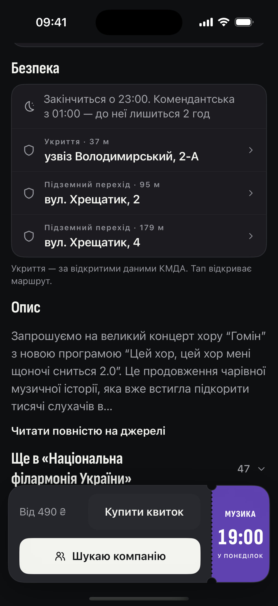
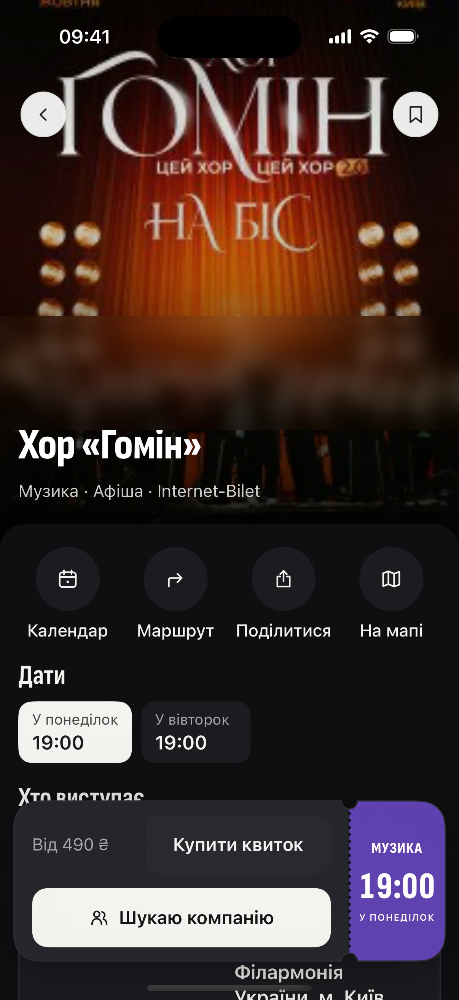

концерт до 23:00.
комендантська — з 01:00.
а ще ж дорога додому
встигнеш?
бачиш, скільки лишаєтьсядо комендантської
і найближчі укриття —ще до виходу
плануєш вечір — і встигаєш
Поряд
о котрій комендантськау твоєму місті? 👇